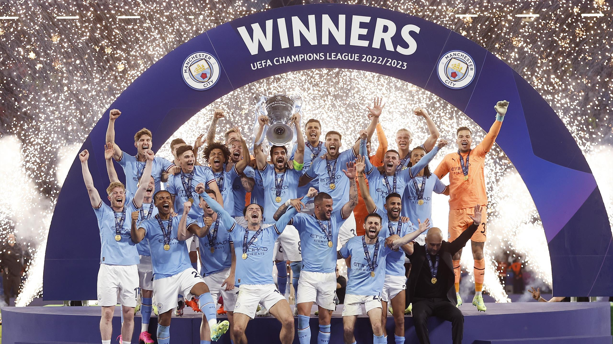

Bienvenue sur la page idéale pour suivre toutes les news et pronostiquez sur la LDC 2025-2026 !

Ligue des Champions 2022-2023 : Manchester City remporte son 1er titre après une finale gagnée 1‑0 contre Inter Milan. Triplé historique (C1 + Premier League + FA Cup). Haaland meilleur buteur (12 buts).

Ligue des Champions 2023-2024 : Real Madrid sacré (15ᵉ titre) après une victoire 2‑0 contre Dortmund. Dernière édition à 32 équipes avant le passage au nouveau format 36 équipes.

Ligue des Champions 2024-2025 : Paris Saint-Germain remporte son 1er titre européen en écrasant l’Inter 5‑0 en finale. Triplé historique PSG : C1, championnat, coupe nationale.